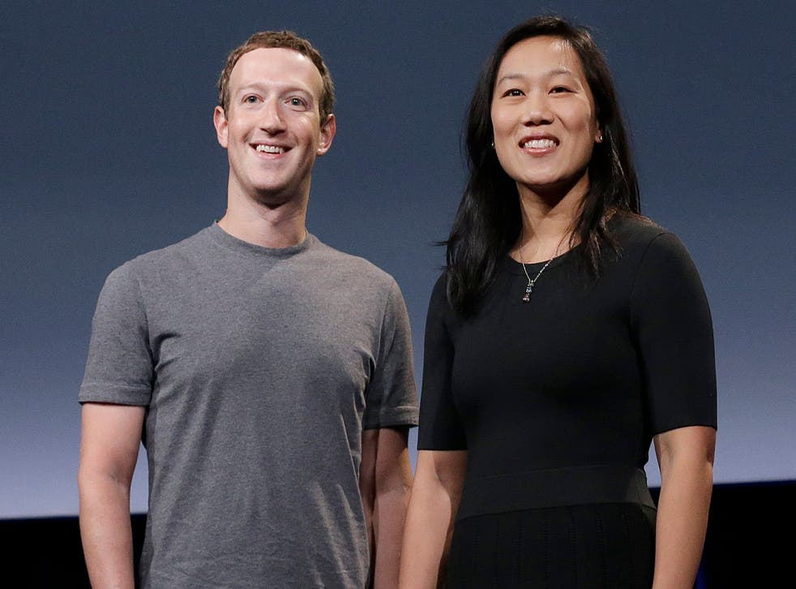

Empresas de Meta
Mark Zuckerberg tiene a la propiedad de su empresa Meta varias empresas de las cuales las mas conocidas son:


Lo que empezó como un medio universitario para compartir información actualmente es la red social más famosa del mundo y, también es un medio muy efectivo para negocios así como para la publicidad gratuita.
Lo que empezó como un medio universitario para compartir información actualmente es la red social más famosa del mundo y, también es un medio muy efectivo para negocios así como para la publicidad gratuita.
Al entrar a las oficinas de Facebook podrás encontrar la frase Done Is Better Than Perfect, más vale tener una prueba y error a no tener nada y fracasar sin haberlo intentado.
Mark Zuckerberg es demasiado humide y sencillo, a pesar de tener miles de billones de dolares en su cuenta del banco, tiene una vida normal sin lujos extravangantes como otros famosos que tienen muchimo menos dinero que Mark.
Mark Zuckerberg tiene a la propiedad de su empresa Meta varias empresas de las cuales las mas conocidas son: